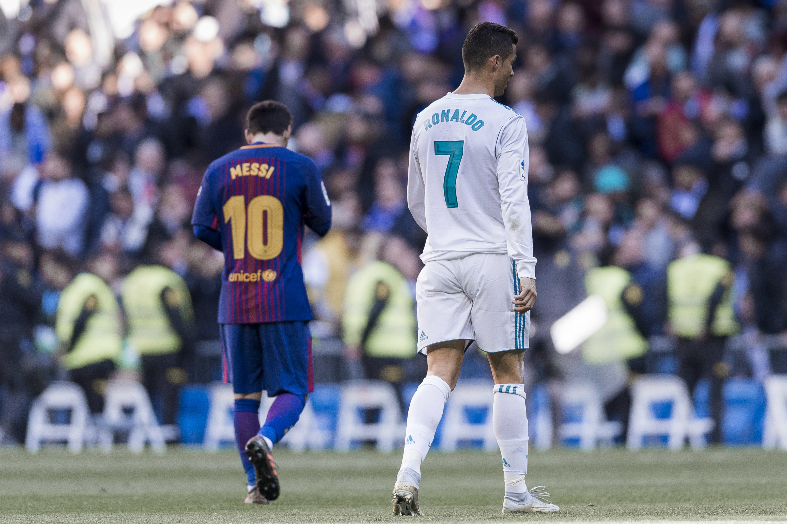

Unless you've been living under a rock for the past few years, you might have heard the term GOAT. If you have been living under a rock, then it might interest you to know that GOAT means greatest of all time. Sports fanatics have argued and still do argue who the GOAT is in their favorite sport. An interesting argument to follow however has been the GOAT debate between football legends Cristiano Ronaldo and Lionel Messi

Cristiano Ronaldo and Lionel Messi pictured together
Warning! I am a huge Ronaldo fan so this article is very biased.
Interesting and reasonable arguments (some stupid ones also) have been raised in the debate on who the GOAT is. From their goal contributions to titles won to eve%;n longevity, these arguments make these debates (more like fights) impossible to settle. It also raises the question can there be more than one GOAT?
Here's a quote from the late Brazillian legend Pele:
Today the best player in the world is Cristiano Ronaldo. I think he’s the best, because he’s more consistent